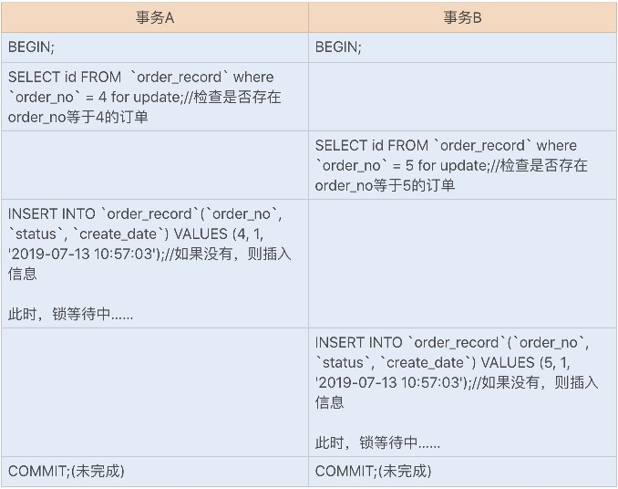

锁 #
行锁， 锁优化 [3] #
-
在InnoDB事务中，行锁是在需要的时候才加上的，但并不是不需要了就立刻释放，而是要等到事务结束时才释放。这个就是两阶段锁协议。 知道了这个设定，对我们使用事务有什么帮助呢？那就是，如果你的事务中需要锁多个行，要把最可能造成锁冲突、最可能影响并发度的锁尽量往后放.[todo 加个例子]
-
行锁是通过索引实现的，如果不通过索引条件检索数据，那么 InnoDB 将对表中所有的记录进行加锁。
-
行锁的具体实现算法有三种：record lock、gap lock 以及 next-key lock。
- record lock是专门对索引项加锁；
- gap lock 是对索引项之间的间隙加锁；
- next-key lock 则是前面两种的组合，对索引项以其之间的间隙加锁。 只在可重复读或以上隔离级别下的特定操作才会取得 gap lock 或 next-key lock，在Select 、Update 和 Delete 时，除了基于唯一索引的查询之外，其他索引查询时都会获取gap lock 或 next-key lock，即锁住其扫描的范围。
隐式锁和显示锁 #
显示锁 SELECT … LOCK IN SHARE MODE(加共享锁); SELECT … FOR UPDATE(加排他锁);
死锁 #
死锁和死锁检测 [5] #
当出现死锁以后，有两种策略：
-
一种策略是，直接进入等待，直到超时。这个超时时间可以通过参数 innodb_lock_wait_timeout来设置。 innodb_lock_wait_timeout的默认值是50s。 实际中不用这种策略。
-
另一种策略是，发起死锁检测，发现死锁后，主动回滚死锁链条中的某一个事务，让其他事 务得以继续执行。将参数 innodb_deadlock_detect 设置为on，表示开启这个逻辑。
-
带来的问题：每个新来的被堵住的线程，都要判断会不会由于自己的加入导致了死锁，这是一个时间复杂度是O(n)的操作。假设有1000个并发线程要同时更新同一行，那么死锁检测操作就是100万这个量级的。虽然最终检测的结果是没有死锁，但是这期间要消耗大量的CPU资源。
-
一种解决思路是控制并发度：并发控制要做在数据库服务端。如果有中间件，可以考虑在中间件实现；如果-团队有能修改MySQL源码的人，也可以做在MySQL里面。基本思路就是，对于相同行的更新，-在进入引擎之前排队。这样在InnoDB内部就不会有大量的死锁检测工作了。
-
另一种解决思路是在应用层上优化:你可以考虑通过将一行改成逻辑上的多行来减少锁冲突。 比如，一个账户1条记录变10条记录。
-
预防死锁 [7] #
- 减少长事务
- 大事务拆成小事务
- 保证加锁顺序一直
- 业务允许的情况下，降低隔离级别 RR几倍下会有间隙锁，会提高死锁发生的概率
死锁的排查和解决 [7] #
- 通过日志系统及时通知死锁事件 通过ELK做通知
- 结合业务代码与死锁日志 进行分析
- 通过 pt-deadlock-logger 监控死锁
- 查看最近一次的死锁日志
show engine innodb status
案例 #
Case [1] #

原因 #
死锁是在并发环境下，两个或多个事务互相等待对方持有的资源而无法继续执行的情况。在上文中，死锁的产生是因为两个事务A和事务B都持有间隙(4,+∞）的gap锁，并且两个事务都在等待对方释放锁，导致循环等待而造成死锁。
解决方案 #
-
innodb_lock_wait_timeout 超时时间 - 通用 避免死锁最直观的方法就是在两个事务相互等待时，**当一个事务的等待时间超过设置的某一 阈值，就对这个事务进行回滚，另一个事务就可以继续执行了。**这种方法简单有效，在 InnoDB 中，参数 innodb_lock_wait_timeout 是用来设置超时时间的。
-
替换 幂等性校验 - 非通用 我们还可以使用其它的方式来代替数据库实现幂等性校验。例如，使用 Redis 以及 ZooKeeper 来实现，运行效率比数据库更佳。
参考 #
-
- 《35 | 记一次线上SQL死锁事故：如何避免死锁？》 刘超
-
- 《33 | MySQL调优之事务：高并发场景下的数据库事务调优》 刘超
-
- 《07 | 行锁功过：怎么减少行锁对性能的影响？》 MySQL实战45讲 丁奇